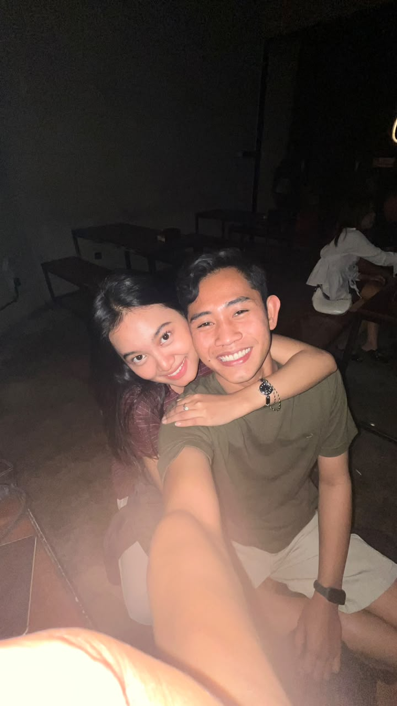

Sayangggg, aku punya sesuatu yang ingin aku sampaikan dari hati.

Aku kan orangnya nggak pandai merangkai kata-kata, jadi aku tulis apa yang bener bener ta rasain. Terima kasih sudah hadir di hidupku, sudah mau menemani aku sampai sejauh ini, dan sudah menjadi seseorang yang begitu berarti buatku.
Aku tahu aku masih banyak kurangnya. Kadang mungkin aku bikin kamu kesal, kecewa, marah, atau belum bisa menjadi seperti yang kamu harapkan. Tapi satu hal yang pasti, aku sayang bangett sama kamu dan aku serius sama hubungan kita🥺.
Sebelum lanjut baca surat ini, ada satu hal yang aku minta sama kamu.
Tolong buka paketnya sekarang yaa...🥺
Aku pengen kamu melihat isi paket itu dulu, baru setelah itu lanjut ke slide berikutnya.
Cincin ini bukan cuma hadiah dari aku. Tapi ingin ini menjadi tanda kalau aku ingin terus bersama kamu dan membawa hubungan kita ke arah yang lebih serius.
Aku nggak tahu apa yang akan terjadi ke depannya, tapi aku ingin melewati semuanya sama kamu. Maukah kamu terus bersamaku dan menjadi bagian dari masa depanku? Semoga kita bisa terus saling menjaga, saling menguatkan, dan tetap memilih satu sama lain.
Maaf kalau cincin ini sederhana dan mungkin belum seperti yang kamu bayangkan. Aku memberikan ini bukan karena harganya, tapi karena aku ingin kamu tahu kalau aku benar-benar serius sama kamu. Semoga kamu mau menerima dan memakainya, biar setiap kali kamu melihat cincin ini, kamu ingat sama aku dan semua niat baikku untuk kita. ❤️
Sekali lagi aku minta maaf ya cantikkuu, untuk kali ini aku belum bisa ngasih cincin ini langsungg ke kamu🥺.
Aku cinta kamu. ❤️ Aku Kangen kamu. ❤️